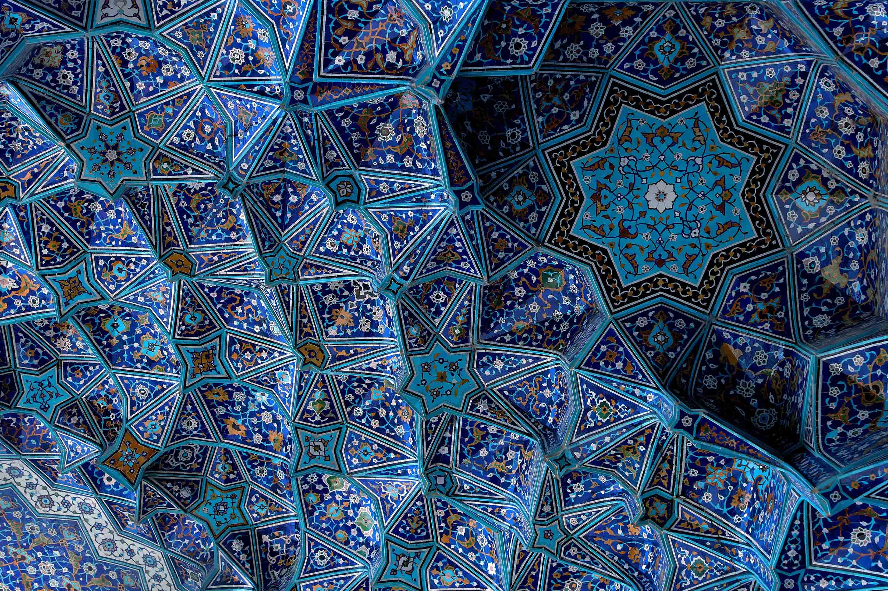

1 I was born 33 years ago in a small outlying village2 Me and my larg family was living there and trying to survive 3 I have passed my primary school there full of corporal punishment and neglet 4 I had heard that Crows(bird) collect jewelries 5 My hobby was walking in fields with my friend and looking for jewelries
6 We moved to a small town nearby when I was 10 and I got the chance to continue education. My sisters had given up education because girls were not allowed to go to school more than primary in our village
7 I chose studying as a method to save myself from arrows which came from the world 8 I have finished scool and took the exam to enter to university 9 I have chosen physics to study as in high school I was the top grade and I was thinking I could get somewhere after graduation10


'No question is silly' is one of their slogan
They encourage students to help each other
I haven't found discrimination since I got to know them
New ideas get encouraged by them even if it is simple
They are friendly people and I feal comfortable attending to the sessions
They have the best deal which gives me the opurtunity to learn for free and find a job
They care about the difficulties that students have
I have experiend using Mac for first time by lending laptop from a member of FAC when I was struggling with an old laptop
I could learn many things for free during coaching program
They laugh at my jockes and I can be myself without fear of judgment
sessions with previous students make me to learn and prepare myself gradualy without pressure
They make everything clear
I could even improve my English during the sessions